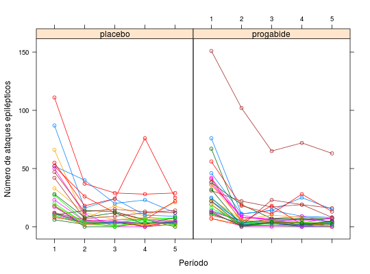

Dados apresentados em Diggle, Liang e Zeger (1994), referentes a um ensaio clínico com 59 indivíduos epilépticos, aleatorizados de modo que cada um recebesse uma droga antiepiléptica (progabide) ou placebo. Os dados de cada indivíduo consistem do número de ataques epilépticos num período de oito semanas antes do tratamento, além do número de ataques em cada período de duas semanas, num total de quatro períodos após o tratamento. O interesse do estudo é verificar possível diminuição na taxa de ataques epilépticos.
Um data.frame com 295 observações e 5 variáveis.
indivperiodsemanataqtratPAULA (2004), Exemplo 5.5.1, pág. 379.
Diggle, P. J.; Liang, K. Y. e Zeger, S. L. (1994). Analysis of Longitudinal Data. Oxford University Press. Seção 8.4.
data(PaulaEg5.5.1)#> Warning: data set ‘PaulaEg5.5.1’ not foundstr(PaulaEg5.5.1)#> 'data.frame': 295 obs. of 5 variables: #> $ indiv : Factor w/ 59 levels "1","2","3","4",..: 1 1 1 1 1 2 2 2 2 2 ... #> $ period: Factor w/ 5 levels "1","2","3","4",..: 1 2 3 4 5 1 2 3 4 5 ... #> $ seman : int 8 2 2 2 2 8 2 2 2 2 ... #> $ ataq : int 11 5 3 3 3 11 3 5 3 3 ... #> $ trat : Factor w/ 2 levels "placebo","progabide": 1 1 1 1 1 1 1 1 1 1 ...ftable(xtabs(~period + seman + trat, data = PaulaEg5.5.1))#> trat placebo progabide #> period seman #> 1 2 0 0 #> 8 28 31 #> 2 2 28 31 #> 8 0 0 #> 3 2 28 31 #> 8 0 0 #> 4 2 28 31 #> 8 0 0 #> 5 2 28 31 #> 8 0 0library(lattice) xyplot(ataq ~ period | trat, groups = indiv, data = PaulaEg5.5.1, type = c("p", "a"), xlab = "Período", ylab = "Número de ataques epilépticos")